blog
I just set up this website (for the most part) today. I'm not really sure exactly what I'm doing with it yet, but I hope to keep this as a sort of diary or something like that.
The files of deltarune have two specific naming schemes for dialogue portaits.
If the character is a member of the main cast (Which I'm defining as any major ally who visits a dark world), their dialogue portraits are labeled "spr_face_[character's first initial]". For example, all of Susie's dialogue portraits are labeled "spr_face_s", all of Noelle's are labeled "spr_face_n", and all of Ralsei's are labeled "spr_face_r".
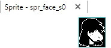
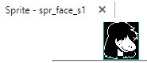
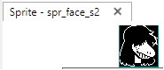
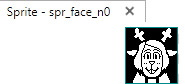
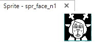
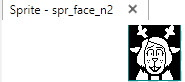
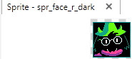
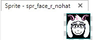
The other characters who follow this pattern are Lancer, Berdly, and Toriel (Who will presumably be very important in chapter 3).
For other characters, full names tend to be used. Asgore's portraits are labeled "spr_face_asgore", Burgerpants' are "spr_face_burgerpants", Sans' are "spr_face_sans", etc.
It's worth mentioning that despite being very important to the story, characters like King and Queen who are primarily antagonists fall into this category. It's not necessarily an indicator of importance, but rather seems to be one of whether the character is a part of the Fun Gang (the group as a whole, not just the playable Fun Gang characters).
There are three characters who seem to break this scheme. Jockington interestingly doesn't fall into either category, having his portraits abbreviated as "spr_face_jock". He's the one character to have an only-partially abbreviated name. You could pass it off as Toby simply shortening a long name, but Burgerpants' name is even longer and that's written out in full. Whether this means Jockington will have a major role in future chapters is unclear.
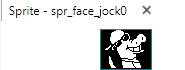
More significantly, Catti (not Catty) has dialogue portaits labeled "spr_face_c". Other than Toriel, who will definitely have a big role in chapter 3, Catti is the ONLY up-until-now-side-character with just her first initial used in the portrait naming. This is pretty damning evidence that she'll be a main character in the future.
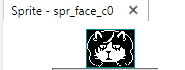
It's worth noting that in Susie's chapter 1 sprites her eyes are covered by her hair. Jockington's eyes are similarly covered by sunglasses, and while Catti's aren't hidden, she does have pretty intense eyeliner. It might not mean anything, but all of the major characters with the exception of Noelle seem to have a pretty consistent "eye" theme. (Even with Noelle, you could argue that her eyes going blank while she uses Snowgrave and the shadows cast over them after using it fits.)
The third character is honestly kind of a long shot, but it's important to point out. I'm sure most of you have seen this unused MS Paint Ralsei portrait:
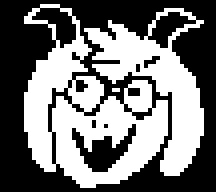
What many of you might not know is that it actually isn't labeled like the other ralsei sprites. The filename is "spr_smallface_a2".
"a". not "r".
This goddamn image might be our first look at deltarune universe Asriel.
The fact that its "a2" implies that there were two other "smallface" Asriel portraits that were for whatever reason removed from the files.
- Susie (spr_face_s)
- Ralsei (spr_face_r)
- Lancer (spr_face_l)
- Noelle (spr_face_n)
- Berdly (spr_face_b)
- Toriel (spr_face_t)
- Catti (spr_face_c)
- Asriel (spr_smallface_a)
- Sans (spr_face_sans)
- Asgore (spr_face_asgore)
- Catty (spr_face_catty)
- Bratty (spr_face_bratty)
- Burgerpants (spr_face_burgerpants)
- Rouxls Kaard (spr_face_rurus) - "rurus" is the Japanese translation of his first name.
- Undyne (spr_face_undyne)
- Rudy (spr_face_rudy_ch1) - Interestingly, Rudy is the only character who doesn't have non-ch1 sprites. Even Catti, who doesn't have any actual new sprites between chapter 1 and 2, has two duplicate sets of files (spr_face_c_ch1 and spr_face_c). It's almost definitely just a tiny little oversight, but I may as well mention it.
- King (spr_face_king)
- Queen (spr_face_queen)
- Alphys (spr_alphysface) - weird break in naming pattern but still not abbreviated
- Jockington (spr_face_jock)
Please let me know if I missed anything. Also keep in mind this is all very much a theory, and kind of a questionable one at that. While I'm personally pretty convinced about Catti in particular, it's all kind of up in the air—I just noticed an interesting pattern and wanted to share it.
I made this one a long time ago, but I've been tweaking it for a while. I've never been a very good mixer, but I'm proud of the composition here for the most part.